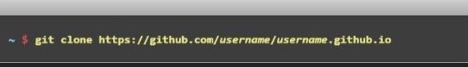
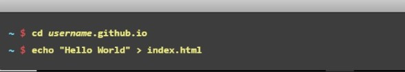
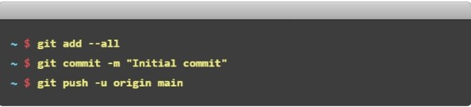

Create a Repository
Head over to GitHub and create a new public repository
named username.github.io where username is your username(or organizational name)
You can get one site per GitHub account and organization,
and unlimited projects sites. Let's get
started.
Create a Repository
Head over to GitHub and create a new public repository
named username.github.io where username is your username(or organizational name)

What Git client are you using?

Clone the repository
Go to folder where you want to store your project, and clone the new repository:

Hello World
Enter the project folder and add index.html file:

Push it
Add, commit and push your changes:

... and you're done!
Fire up your browser and go to https:// username.github.io.
Now that you're up and running, here are
a few things you should know
Blogging with Jekyll
Using Jekyllyou can blog using beautiful Markdown
syntax, and without having to deal with
any databases.
Learn how to set up Jekyll
Custom URLs
Want to use your own custom domain for a GitHub Pages site? Just create a file named CNAME and include your URL. Read more

Guides
Learn how to create custom 404 pages, use submodules, and learn more about GitHub Pages.